| Número | Título | Diretor | Lançamento |
|---|---|---|---|
|
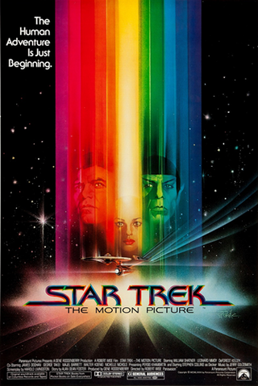
1 |
Star Trek: The Motion Picture | Robert Wise | 7 de dezembro de 1979 |
|
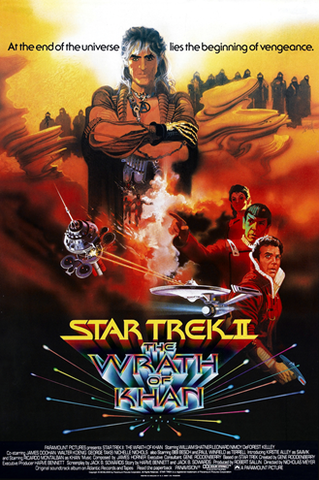
2 |
Star Trek II: The Wrath of Khan | Nicholas Meyer | 4 de junho de 1982 |
|
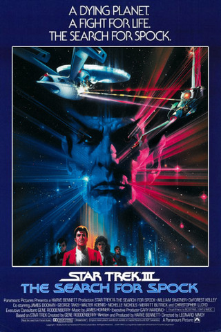
3 |
Star Trek III: The Search for Spock | Leonard Nimoy | 1 de junho de 1984 |
|
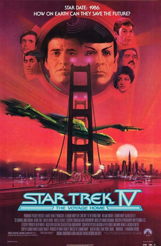
4 |
Star Trek IV: The Voyage Home | Leonard Nimoy | 26 de novembro de 1986 |
|
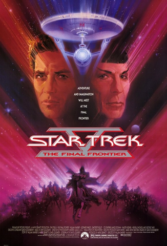
5 |
Star Trek V: The Final Frontier | William Shatner | 9 de junho de 1989 |
|
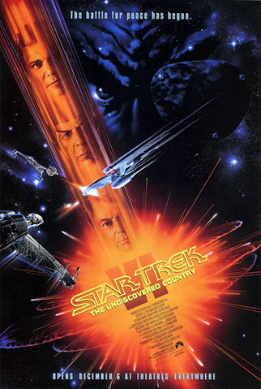
6 |
Star Trek VI: The Undiscovered Country | Nicholas Meyer | 6 de dezembro de 1991 |
|
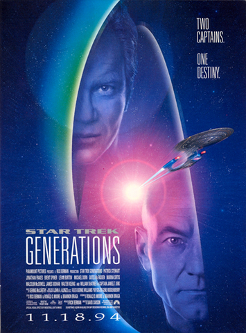
7 |
Star Trek Generations | David Carson | 18 de novembro de 1994 |
|
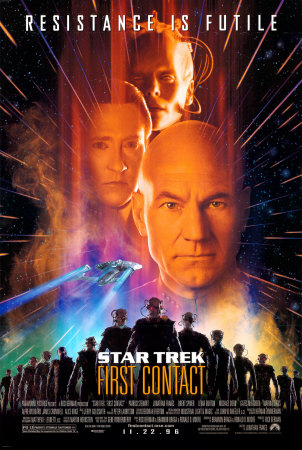
8 |
Star Trek: First Contact | Jonathan Frakes | 22 de novembro de 1996 |
|
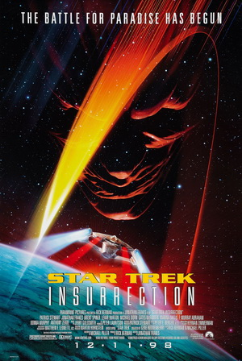
9 |
Star Trek: Insurrection | Jonathan Frakes | 11 de dezembro de 1998 |
|
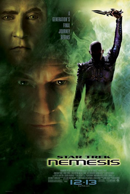
10 |
Star Trek Nemesis | Stuart Baird | 13 de dezembro de 2002 |
|
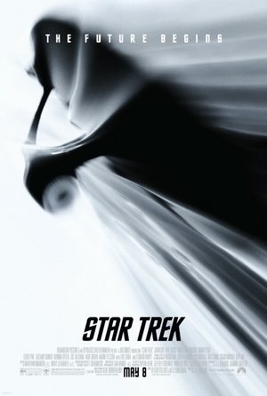
11 |
Star Trek | J. J. Abrams | 8 de maio de 2009 |
|
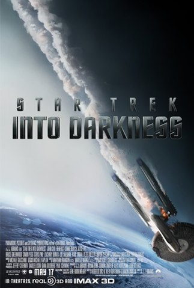
12 |
Star Trek Into Darkness | J. J. Abrams | 17 de maio de 2013 |
|
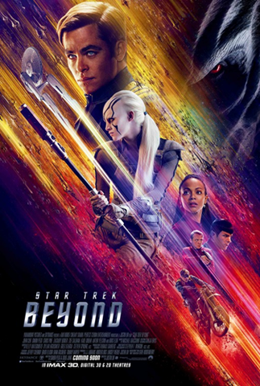
13 |
Star Trek Beyond | Justin Lin | 22 de julho de 2016 |